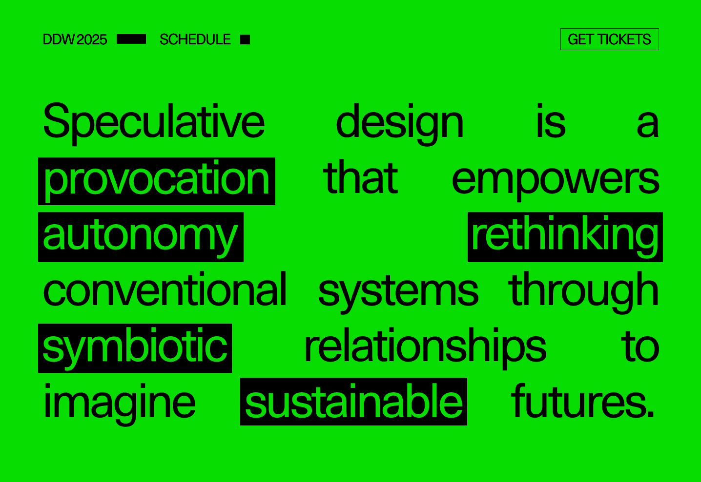
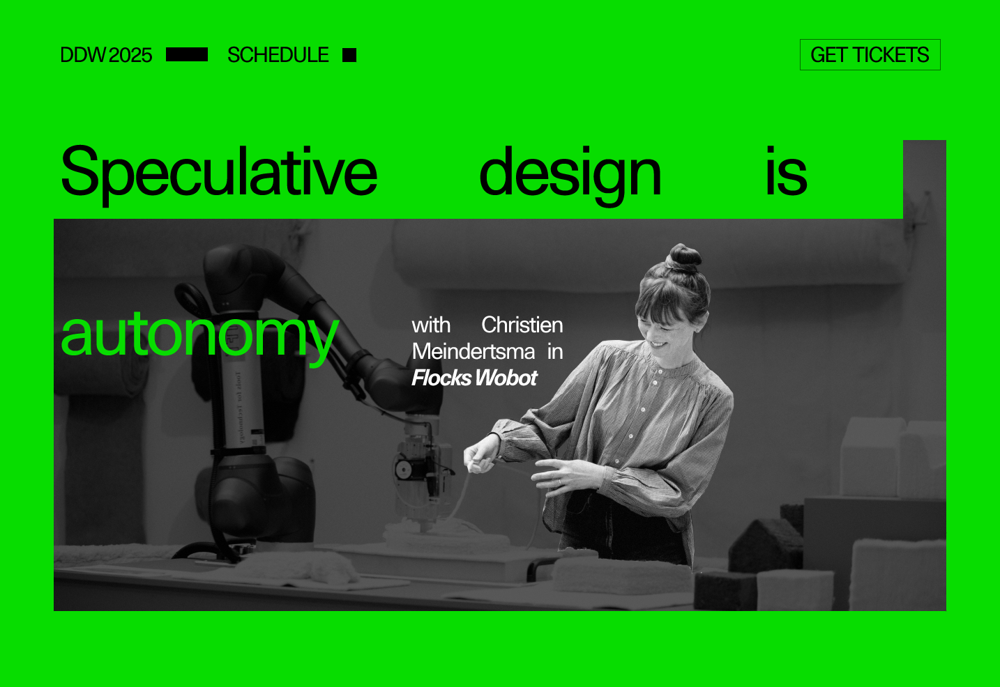
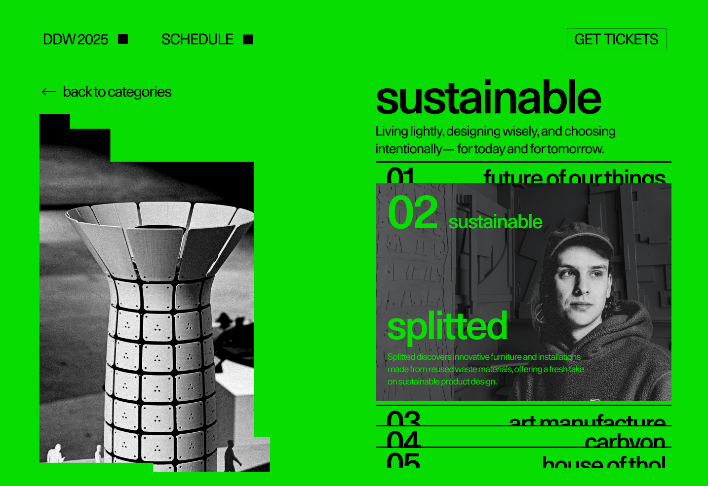
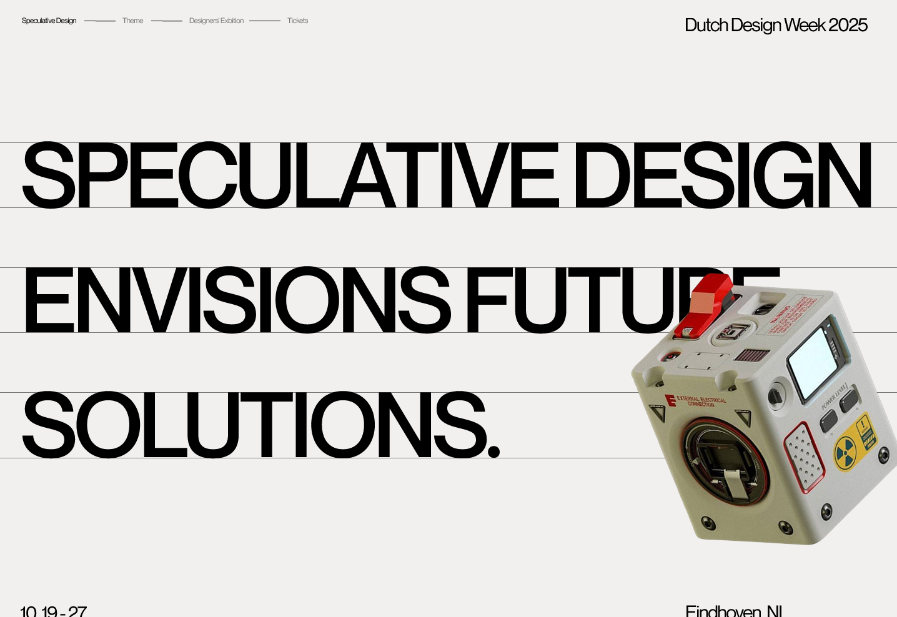
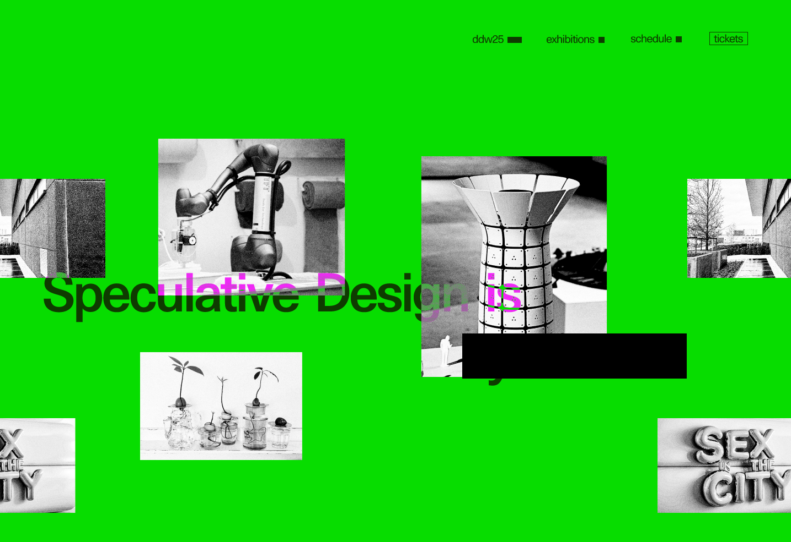
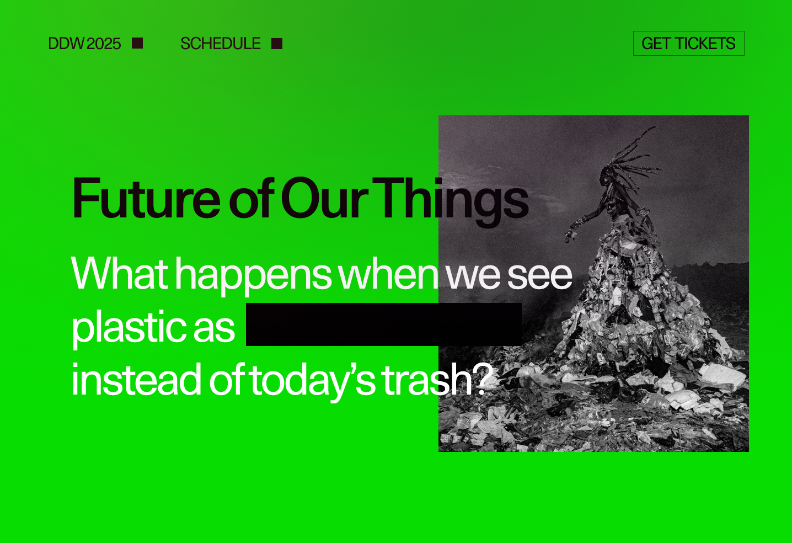
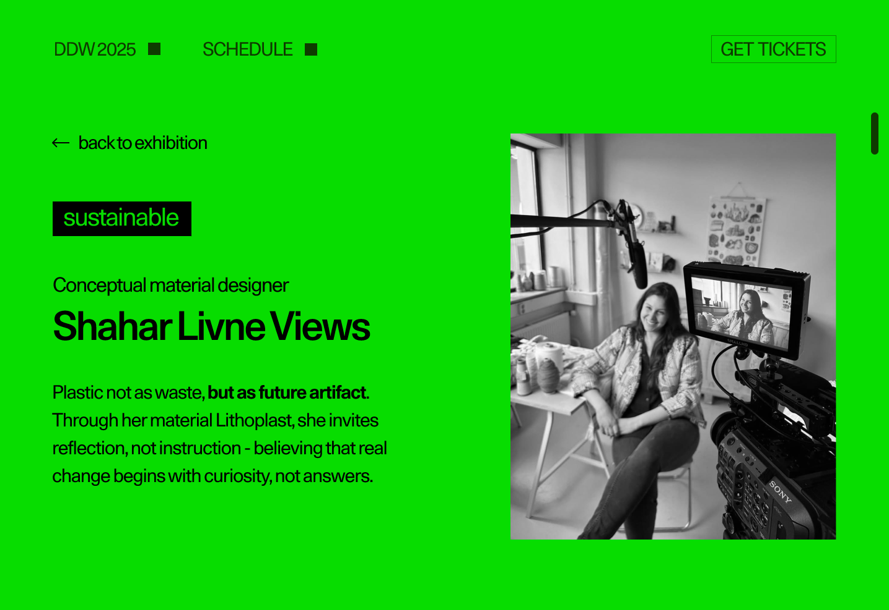

02
DUTCH DESIGN WEEK
A microsite project exploring how expressive interface design can translate Dutch Design Week's experimental identity into a bold, narrative driven digital experience.
OVERVIEW
THE CLIENT
Dutch Design Week is an international design festival held in Eindhoven that showcases experimental, forward thinking work from over 2,500 designers. Known for its focus on innovation and speculative design, the event challenges traditional approaches and encourages new ways of thinking about the future.
THE MISSION
The goal of this project was to design an expressive microsite that translates Dutch Design Week's experimental identity into a digital experience. It focuses on a bold, narrative driven interface that communicates through layout, typography, and interaction, while remaining clear and usable. The experience is also designed to educate and spark curiosity, encouraging users to explore more about Dutch Design Week.
Below are my contributions to the visual direction, interaction design, and microsite prototype.
IDENTIFYING THE PROBLEM
Dutch Design Week called for an expressive yet functional microsite that could reflect its speculative identity.
A core challenge was moving beyond common interface patterns and exploring how visual structure itself could communicate meaning. The project aimed to guide users through exhibitions in a way that highlighted designer perspectives, invited curiosity, and balanced clarity with expression.



EXPRESSIVE IDENTITY
The interface needed to reflect Dutch Design Week's experimental and future focused character without relying only on conventional layout systems.
CONTENT PRIORITIZATION
Presenting a large number of designers and exhibitions required careful prioritization of information. Within a visually expressive layout, it was important to guide user attention, ensuring key content stood out while maintaining a clear structure.
CLARITY IN COMPLEXITY
While the project embraced experimentation, the experience still had to remain clear and intuitive as users moved through multiple designers, exhibitions, and content paths.
OUR APPROACH
Build an expressive digital experience through graphic exploration, iteration, and interaction testing.


EXPLORATION
To shape the visual direction, we began with poster studies that explored scale, framing, overlapping imagery, and typographic composition. This process helped identify which visual principles aligned most strongly with Dutch Design Week's experimental identity.
ITERATION
We translated two visual directions into microsite prototypes to test how each approach performed in an interactive setting. Hover reveals, subtle transitions, and pacing experiments allowed us to compare atmosphere, hierarchy, and engagement before moving into the final design.
FINAL MICROSITE
Bringing visual direction and interaction together into a cohesive digital experience.


DESIGN EXECUTION
The final microsite combines bold colour, cropped imagery, framing bars, and expressive typography to create a visually distinct experience. These design choices establish atmosphere while also helping users stay oriented as they move through the content.
USER FLOW
A key challenge was organizing a complex path across multiple designers while still preserving curiosity and exploration. By refining the structure early and strengthening navigation through visual cues and subtle motion, the final experience became more intuitive, intentional, and engaging.
REFLECTION
COMMUNICATION
This project made me more aware of how strongly both copywriting and design rely on anticipating what an audience may or may not already know. Explaining concepts such as contrast, cropped imagery, and experimental hierarchy clearly became just as important as using them in the design itself.
KEY TAKEAWAYS
Documenting the project's evolution from poster exploration to interactive microsite helped communicate not only the final outcome, but also the reasoning behind it. My main takeaway was that clarity and transparency are essential to effective communication, thoughtful design, and stronger audience engagement.